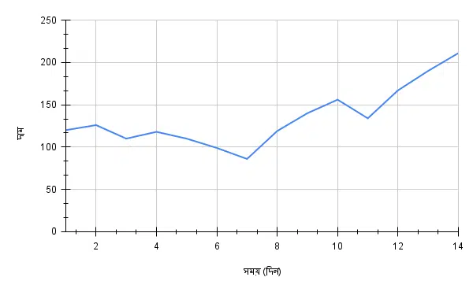

What is a chart Pattern?
A chart is a graphical representation of data to make information more digestible and less daunting.
Different types of charts like line charts, bar charts, pie charts, etc., present data
through distinct symbols such as lines, bars, and segments.
Line Chart
This type is a simple chart traditionally used to graphically illustrate the fluctuations
in share prices across different time frames - monthly, weekly, daily, hourly, and even
by the minute. Still in use today, line charts on Google, for instance, primarily display
closing prices of shares at the end of a specific period. It's less complex and provides
fewer data compared to a candlestick chart.
Picture drawing graphs in school, with time on the x-axis and price on the y-axis,
plotting the closing prices at the end of chosen intervals and connecting these points
into a chart - that's essentially a line chart.

Candlestick Chart
While a line chart centers on the closing price, a candlestick chart offers more insights by
comprising the opening price, closing price, highest price, and lowest price of a share.
This chart type makes it easier to visualize fluctuations in the share price or even an
index point like Nifty 50 over a set period, offering a broader snapshot of market behavior.
The term 'Time Frame' or 'Time Interval' refers to the specific period in which price
changes are highlighted on any stock market chart. Adjusting this time frame can present
various perspectives on the same share price. While a wider time frame provides a generalized
overview, a shorter one reveals minute variations. Time frames can range from 1 year to 1 month,
1 week, 1 day, varying hours and minutes, and in some cases, even 30 seconds!